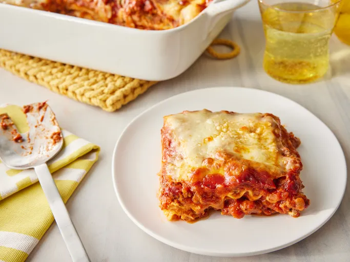

Lasagna
Home
The World's best Lasagna

Ingredients You'll Need for Lasagna
The Allrecipes community adores this lasagna recipe because it's incredibly customizable,
so you can easily alter the ingredient list to suit your needs. If you want to stay true to the original recipe,
though,these are the ingredients you'll need to add to your grocery list:
Meat: This super meaty lasagna has sweet Italian sausage and lean ground beef.
Onion and garlic: An onion and two cloves of garlic are cooked with the meat to add tons of flavor.
Tomato products: You'll need a can of crushed tomatoes, two cans of tomato sauce, and two cans of tomato paste.
Sugar: Two tablespoons of white sugar add subtle sweetness and enhance the flavor of the sauce.
Spices and seasonings: This lasagna recipe is flavored with fresh parsley, dried basil leaves, salt, Italian seasoning, fennel seeds, and black pepper.
Lasagna noodles: Use store-bought or homemade lasagna noodles.
Cheeses: Parmesan, mozzarella, and ricotta cheese make this lasagna extra decadent.
Egg: An egg helps bind the ricotta so it doesn't ooze out of the lasagna when you cut into it.
What to Serve With Lasagna
Wondering what goes with lasagna? We've got you covered. Check out our collection of 12 Easy Side Dishes
for Lasagna for delicious serving inspiration. Or try one of these popular sides that pair perfectly with
lasagna:
Toasted Garlic Bread
Tomato Mozzarella Salad
Easy Arugula Salad
Quick and Easy Sautéed Spinach
Garlic Butter Mushrooms
How to Reheat Lasagna
You can use the microwave to reheat lasagna if you're in a pinch or short on time, but be aware that it will
change the texture of the noodles. The best way to reheat lasagna is in the oven. Simply cover the leftovers
with foil and bake at 350 degrees F for about half an hour, or until it's heated through and the sauce is bubbly.
How to Freeze Lasagna
If you're planning to freeze lasagna, it's best to cook it in a foil baking dish. Allow the casserole to
cool, then cover the whole thing in at least one layer of storage wrap. Wrap it again in aluminum foil to
prevent freezer burn. Freeze for up to three months.
How to Reheat Frozen Lasagna
Thaw the frozen lasagna in the refrigerator overnight, then follow the reheating instructions above.
If you don't have time to thaw in the fridge, you can reheat it from frozen—just make sure to add a few
minutes to the cook time to ensure the dish is heated through.
Ingredients
1/2x
1x
2x
Original recipe (1X) yields 12 servings
1 pound sweet Italian sausage
¾ pound lean ground beef
½ cup minced onion
2 cloves garlic, crushed
1 (28 ounce) can crushed tomatoes
2 (6.5 ounce) cans canned tomato sauce
2 (6 ounce) cans tomato paste
½ cup water
2 tablespoons white sugar
4 tablespoons chopped fresh parsley, divided
1 ½ teaspoons dried basil leaves
1 ½ teaspoons salt, divided, or to taste
1 teaspoon Italian seasoning
½ teaspoon fennel seeds
¼ teaspoon ground black pepper
12 lasagna noodles
16 ounces ricotta cheese
1 large egg
¾ pound mozzarella cheese, sliced
¾ cup grated Parmesan cheese
Home